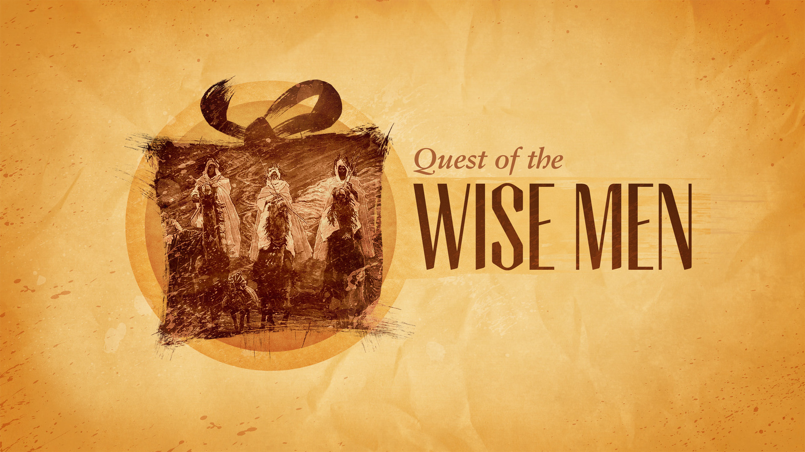

Connecting the Story
“See, I will send the prophet Elijah to you before that great and dreadful day of the Lord comes. He will turn the hearts of the parents to their children, and the hearts of the children to their parents
Malachi 4:5-6 NIV
Gap
Setting the Stage
And he will go on before the Lord, in the spirit and power of Elijah, to turn the hearts of the parents to their children and the disobedient to the wisdom of the righteous—to make ready a people prepared for the Lord.”
Luke 1:17 NIV
Wilderness
John's Message
Religious Leaders
Baptism
Jesus on the Scene
Why?
Jesus Identified
You are my son; today I have become your father.
Psalm 2:7 NIV
“Here is my servant, whom I uphold, my chosen one in whom I delight; I will put my Spirit on him, and he will bring justice to the nations.
Isaiah 42:1 NIV
Prophets Today
======= Matthew 2:1-23
What is Epiphany?
a sudden, intuitive perception of or insight into the reality or essential meaning of something, usually initiated by some simple, homely, or commonplace occurrence or experience
First to Herod
The Nativity Scene
Who are These Men?
The Visit
The Gifts
What Happens to the Sages?
Jesus in Egypt
Tragedy in Judea
This is what the Lord says: “A voice is heard in Ramah, mourning and great weeping, Rachel weeping for her children and refusing to be comforted, because they are no more.”
Jeremiah 31:15 NIV
What About Us?
So bring Him incense, gold, and myrrh,
Come peasant king to own Him,
The King of kings, salvation brings,
Let loving hearts enthrone Him